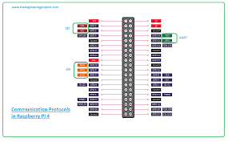
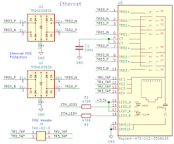

Raspberry pi 4 model B
The Raspberry Pi 4 Model B is a powerful, low-cost, credit-card-sized single-board computer developed by the Raspberry Pi Foundation.
![[صورة للوحة Arduino 101]](../imgRaspberry4B/1.png)
---
---
schematics TOP

Here you will find the technical specifications for the Raspberry pi 4 model B
Features
Name
Raspberry pi 4 model B
Çift Çekirdekli Mimari
• 512 KB Flash Hafıza.
• 80 KB RAM.
• 16 KB Gerçek EEPROM.
Internal Peripherals (Connectivity)
• CAN Bus: Essential for automotive and industrial communication.
• SDIO: High-speed interface for reading MicroSD cards.
• DACs (Digital to Analog Converters) for generating audio signals.
• STM32CubeIDE: The official free software from ST. It uses C/C++ and the HAL (Hardware Abstraction Layer) library.
• MicroPython: Because the F4 has plenty of RAM, it runs Python scripts very well for rapid prototyping.
• Arduino IDE: With the "STM32duino" core, you can program it just like an Arduino.
Use the STM32F4 if your project involves:
• Audio: Audio filtering, synthesis, or recording.
• Flight Control: Drones (Quadcopters) require the fast floating-point math of the F4.
• Displays: Driving colorful TFT screens.
• High-Speed Sampling: Reading sensors faster than 100kHz.